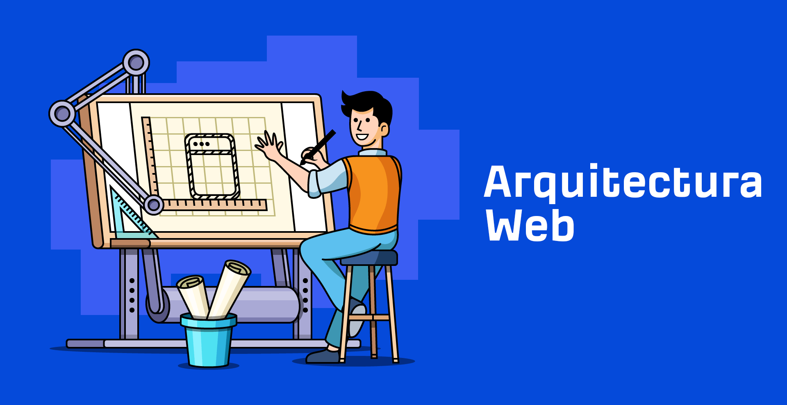
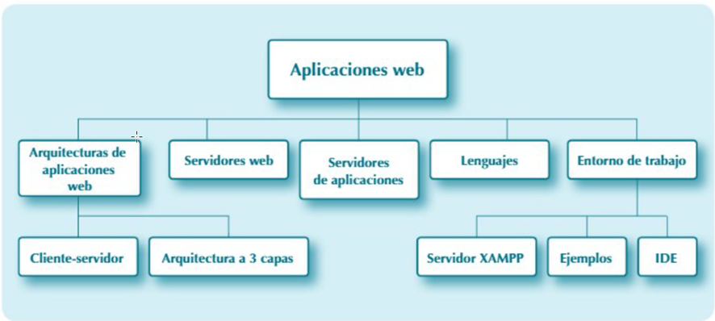
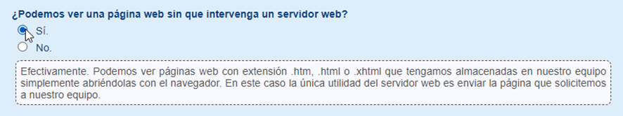
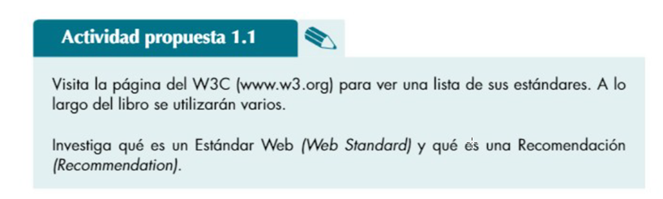
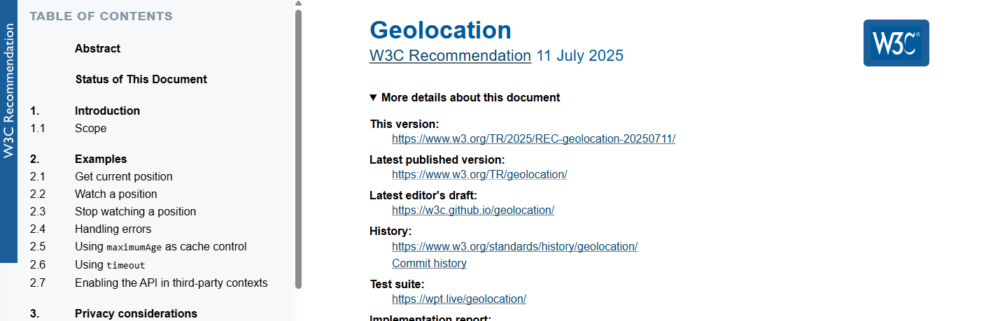
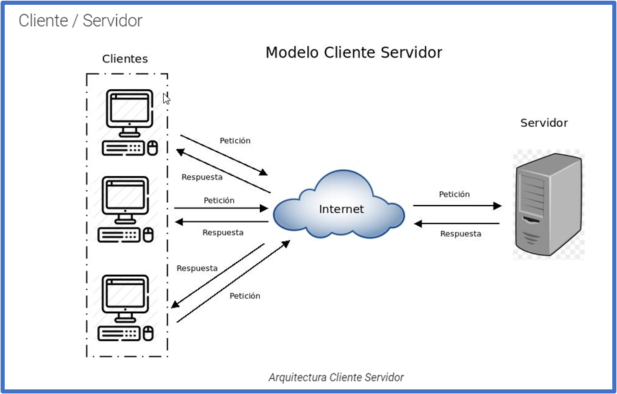
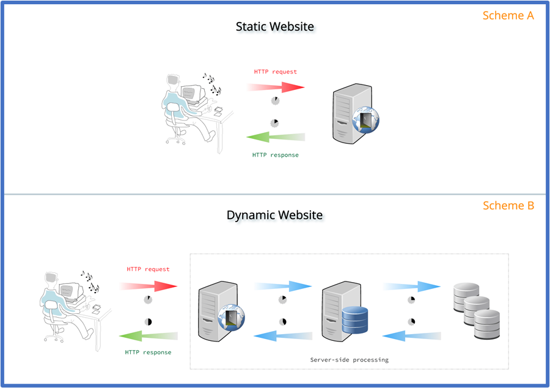
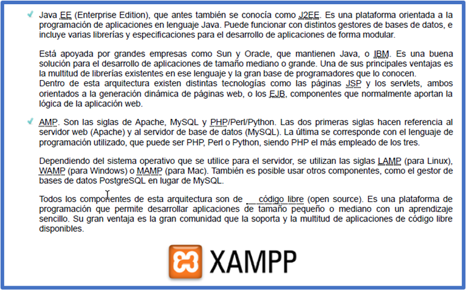
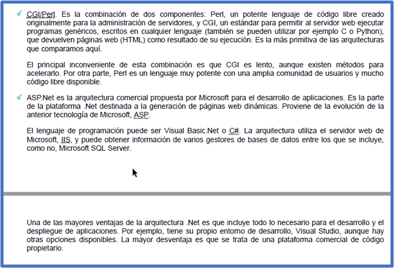
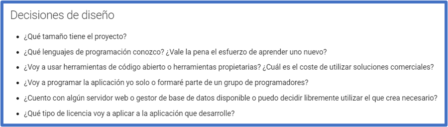

UD1 - Web Architectures
RA1 Selects architectures and server-side web programming technologies, analyzing their capabilities and characteristics
Estimated duration: 3 sessions, Evaluation Criteria:
- A Server-side and client-side code execution models have been characterized and differentiated.
- B The advantages of dynamic web page generation and its differences from embedding script statements inside web pages have been recognized.
- C Code execution mechanisms on web servers have been identified.
- D The functionalities provided by application servers and their integration with web servers have been recognized.
- E The main languages and technologies related to server-side web programming have been identified and characterized.
- F Mechanisms for integrating markup languages with server-side programming languages have been verified.
- G Server-side programming tools have been recognized and evaluated.

1 Introduction
The web has evolved significantly since its beginnings, transforming how we interact online. A brief summary of its history might be:
The birth of the World Wide Web
In 1989, Tim Berners-Lee, a scientist at CERN in Switzerland, proposed a hypertext system to share information among researchers. This system led to the creation of the World Wide Web. In 1991, Berners-Lee launched the first web browser, called WorldWideWeb, and developed HTML, the markup language that became the foundation of web programming.
HTML and the rise of web programming
HTML allowed developers to create and organize online content using tags and attributes. The rapid adoption of the web led to a higher demand for online content and the emergence of web programming.
Web 2.0
In 2004, the term Web 2.0 was coined to describe the evolution toward interactive web applications. This phase was characterized by interactivity, collaboration, and user participation in content creation. JavaScript and AJAX played a crucial role in this evolution, allowing dynamic content updates without reloading the entire page.
CSS and web design
With the need to create visually appealing web pages, CSS emerged as a language that allows developers to style web pages. CSS enhanced the user experience by enabling more complex and stylized designs.
Present and future
Today, web programming continues to evolve with new technologies and frameworks that facilitate the development of advanced web applications. It has gone from being a basic tool for sharing information to a complex and dynamic platform that supports high-end applications.
We will begin this unit by reviewing some key concepts related to web applications:

1.1 Characteristics of web programming
When a web page is downloaded to your computer, its content defines what should be displayed on screen. This content is written in a markup language made up of tags, such as HTML or XHTML. These tags define each part's purpose. For example, tags specify a heading, a table section, or simply a paragraph of text.
Additionally, if the page is well-structured, the information that tells the browser how each part should be styled is stored in a separate file, a stylesheet or CSS. The style sheet is indicated in the web page and downloaded by the browser along with it. In it, you might find styles specifying that the heading uses Arial font in red, or that paragraphs are aligned to the left.
These two files are downloaded to your computer from a web server in response to a request. The steps are:
- Your computer requests a page with a .htm, .html, or .xhtml extension from a web server.
- The server searches for that page in its storage.
- If it finds it, the server retrieves it.
- Finally, it sends it to the browser to display its content.
This is a typical client-server communication. The client makes the request and initiates the communication, and the server responds. In our case, the browser is the web client.

W3C
The World Wide Web Consortium (W3C) is an international organization that develops standards for the web. Here are some of its main purposes:
- Standard development: W3C creates and maintains web standards like HTML, CSS, and XML, ensuring developers have a common rule set for building web applications.
- Interoperability: By following W3C standards, developers can build websites that work consistently across browsers and devices, improving user experience.
- Accessibility: W3C promotes accessibility through initiatives like the Web Content Accessibility Guidelines (WCAG), helping make the web accessible to people with disabilities.
- Innovation: By developing new technologies and standards, W3C drives innovation, enabling the creation of more advanced applications.
- Security: W3C works on security standards to protect information and user privacy on the web.
In short, the W3C plays a key role in the development and evolution of the web, ensuring it is accessible, secure, and functional for everyone.
Activity 1
Activity 1
Search on the W3C website for examples of its uses.


2 Web Architectures
Web architectures are fundamental to the design and development of websites and applications, as they define how systems are structured and organized.
What is a Web Architecture?
A web architecture refers to the overall structure and components involved in a web system. This includes infrastructure design, server-client communication, and how data and logic are managed.
The most common web architectures are:
- Monolithic: All components are integrated into a single codebase. Easy to develop but hard to scale and maintain.
- Client-Server: The client (usually a browser) interacts with a server that processes requests and returns responses. A classic web model.
- Three-tier Architecture (3-tier): Divided into presentation layer (front-end), logic layer (back-end), and data layer (database). This separation improves maintenance and scalability.
- Microservices: Each application function is developed as an independent service that can scale and be deployed separately. Common in modern systems for their flexibility and scalability.
2.1 Client-Server Model
One of the most widely used software architectures is the client/server architecture. In this model, one application makes requests (the client) and another waits to receive, process, and respond to those requests (the server).
Examples include NTP (Network Time Protocol) servers, FTP (File Transfer Protocol) servers, or HTTP servers which serve web pages.

2.2 Static / Dynamic Web Pages
The pages in the previous example are called static web pages. These pages are stored in their final form, just as they were created, and their content does not vary. They are useful for displaying specific information, which remains the same every time the page loads. They can only change if a programmer manually updates them.
In contrast, there are dynamic web pages, whose content changes based on various factors such as the browser used, user identity, or previous actions.
Among dynamic pages, there are two main types:
- Pages that include code executed by the browser. This code, usually in JavaScript, is embedded in the HTML/XHTML and runs when the browser displays the page. It can enable animations or change page content and appearance. (This course only covers JavaScript when it relates to server-side programming.)
- Pages that do not have extensions like .htm, .html, or .xhtml. Instead, they use extensions such as .php, .asp, .jsp, .cgi, or .aspx. These pages do not store pre-written HTML; rather, the HTML is generated dynamically on the server as the result of program execution.

2.3 Architectures and Languages
One of your first decisions when programming a web application is which architecture best suits your project. Many alternatives exist. Examples include:


2.4 Design Decisions
To choose the appropriate architecture, you must consider various design-related aspects such as:

Deliverable Activity
Deliverable
Start creating acustom infographic using Canva, Genially, etc., compiling information and conclusions from this topic. Include the activities and curiosities you completed along the way.
More details in the section "Deliverable Activity"